5/16/2014
Fun
lesson on a dressage horse
I bid in a benefit auction on a riding lesson to be given on a
horse trained in upper level movements.
It meant a trip down to Houston, but the drive was so worth it. The people
were very nice, the barn was lovely and the horse was patient with me.
What I learned most was that even on a well trained horse I really needed
to ride the horse (duh). Every stride.
He never took advantage of me, but he also didn't give me the ride just
because I was sitting on him. I had to keep him soft and round
(didn't always happen) and then have that timing along with the
positioning and core muscles to keep him there while we did the fun stuff.
It had me come back to Miaren with a different view. Less frustration when
he didn't start out soft and round and more forgiving
when I have to remind him how I want him to stay. It also gave me a feel
to aim for in my training.
All in all, a great experience at Woodlands Equestrian Club.
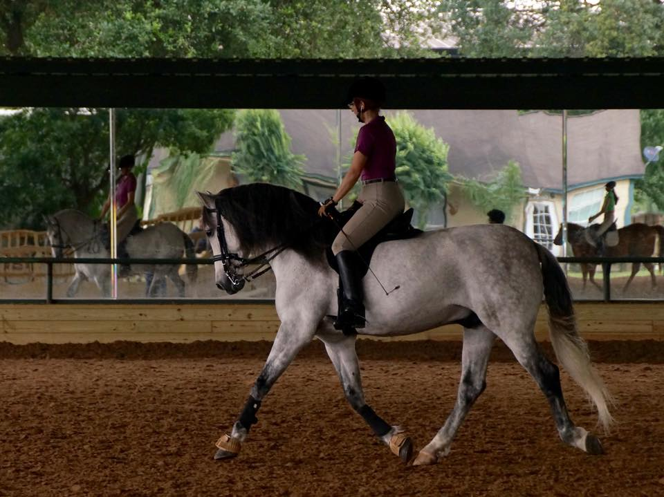
Getting a feel for each other. He had a neck that reminded me of Thuy's.
If it went too high then I had a hollow horse, again, like Thuy.
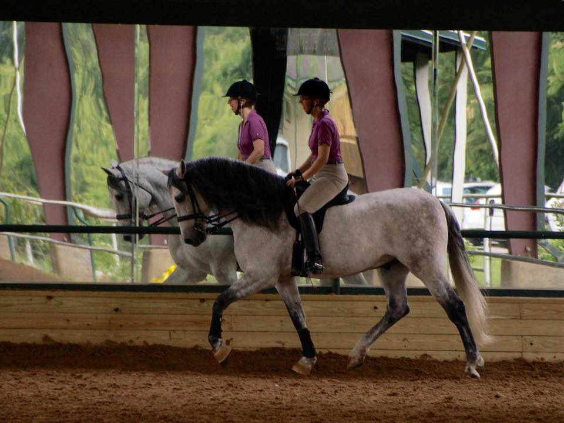
The trainer commented a few times on my posture, but riding a horse with
this feel made me want to sit up straight. It's very different than
riding a horse
you're trying to train.
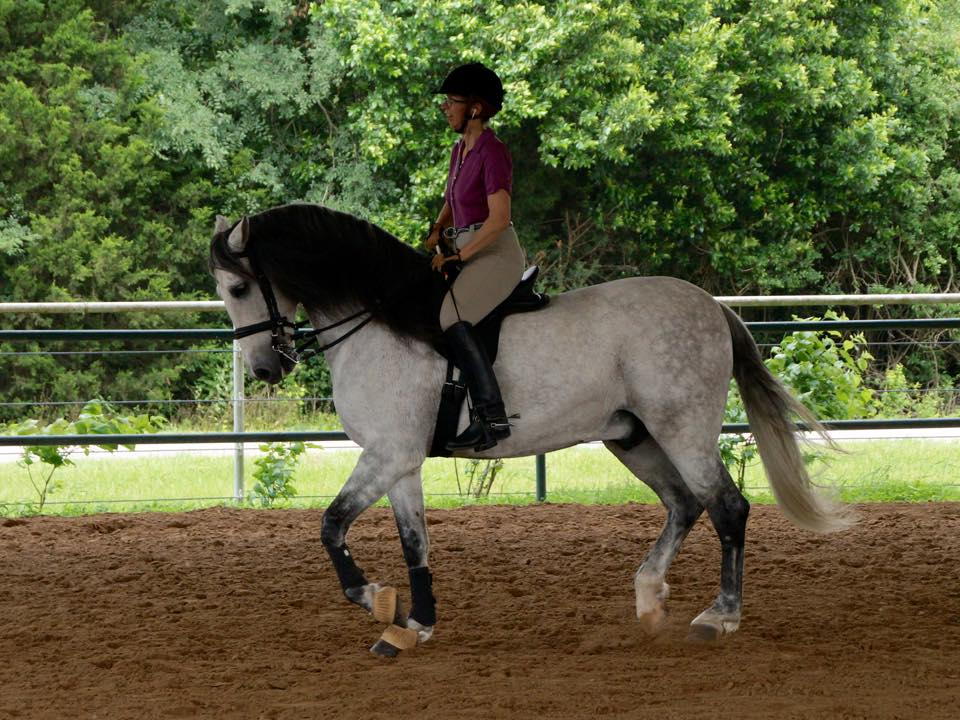
We did some warm up and then did some work on collecting him and then
sending him on. It took a few tries to realize that letting him out
didn't mean
strung out and on the forehand. The trainer always wanted him controlled
but engaged.
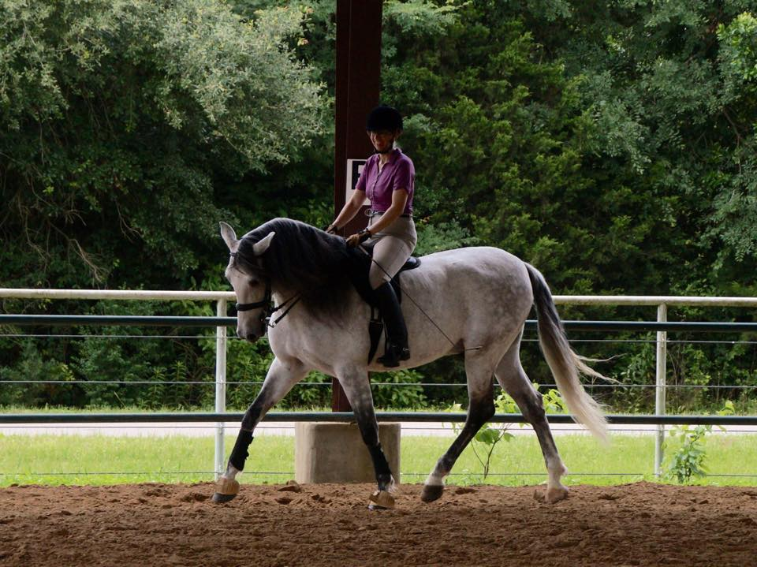
And grinning because the shoulder in felt so nice and smooth. Miaren
isn't always this easy.
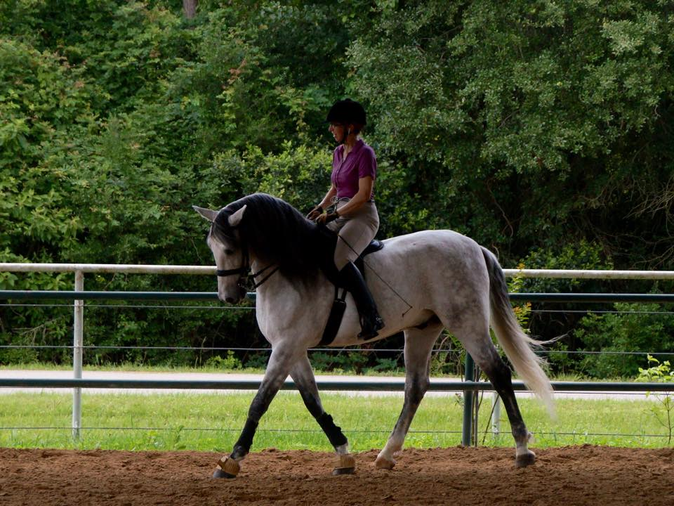
Then remembering I should be looking where we're going.
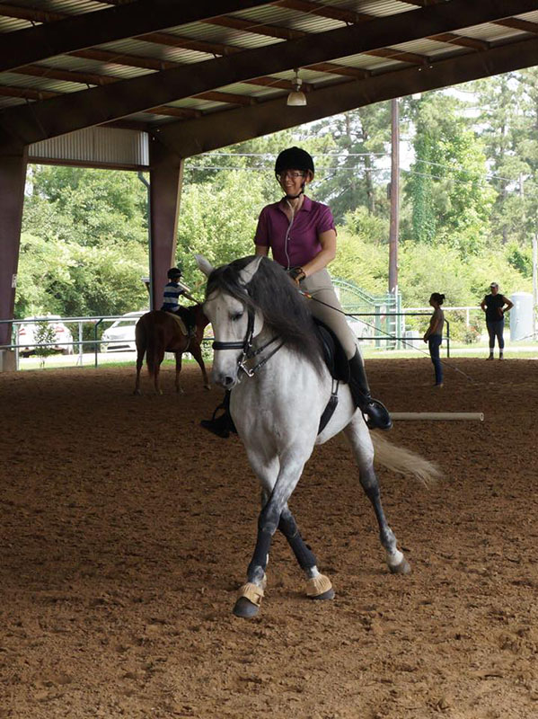
And half pass. Again, great to do it on a horse that knows how and be
corrected to see
how positioning will then help as I train Miaren.
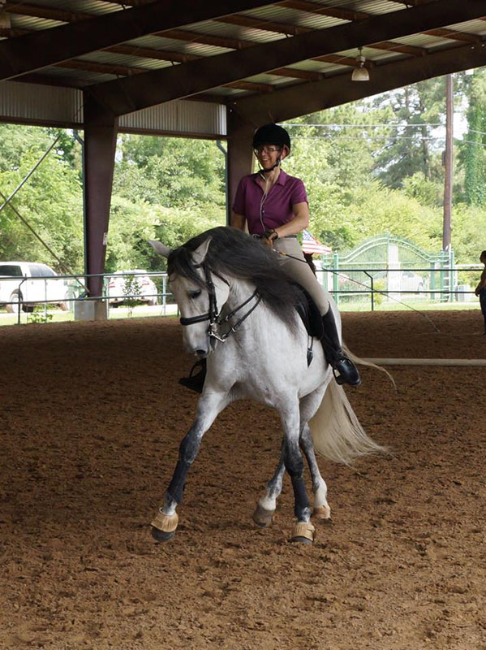
I'm eager to try this on Miaren now that I have a better idea on
positioning. The trainer explained what
I was doing that made it more difficult for the horse and told me how to
make it easier for him.
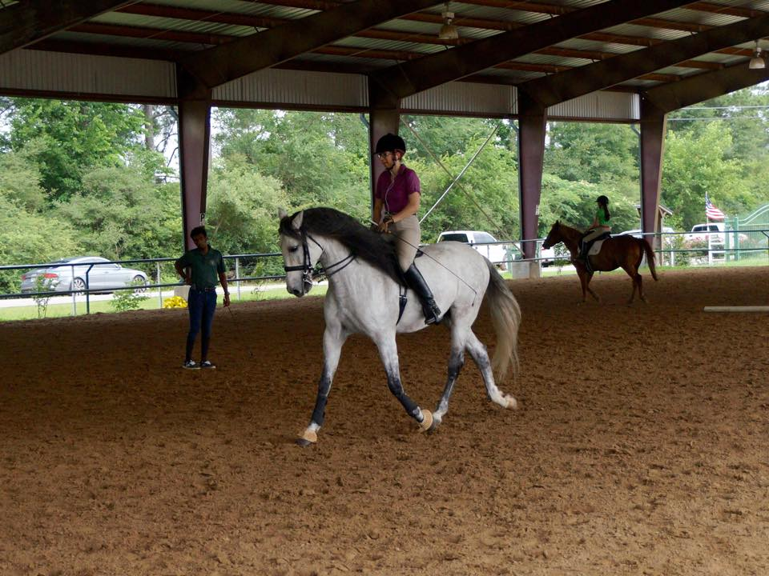
The horse and I both concentrating very hard.
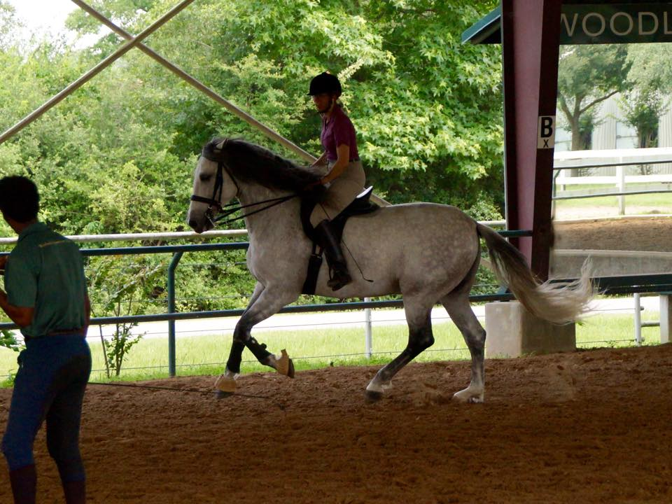
By our second canter I was getting tired and it took a few tries to end
it on a good note. I think I was riding too aggressively (how I tend to
ride Miaren)
and the horse was tense in his canter, so not slow and deliberate. We
came back and now I'm working to let Miaren do the work in the canter
which is
going to take some retraining for both of us. But, it will be nice to
stop nagging in the canter and have tools to use. I guess we had so much
trouble
getting and keeping the canter to begin with and I never went back to
asking and leaving him alone. This horse did a good job explaining that
to me. Once I
relaxed and lightened everything, I could just think canter and it would
happen and it was balanced and slow and easy.
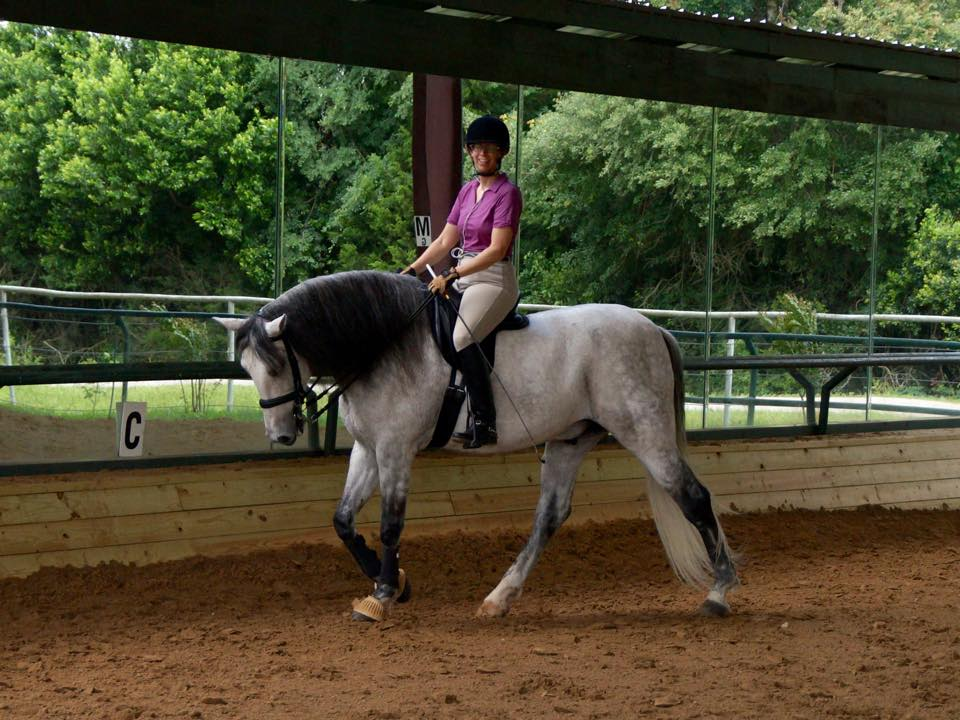
Taking a little stretch break. Neat how he just reaches for the bit at
any length.
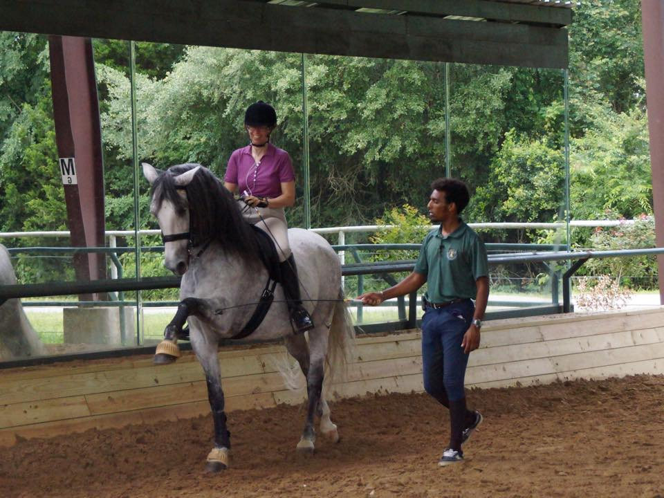
Spanish Walk. I doubt we'll ever teach Miaren this. He already stomps
more than we'd like him to.
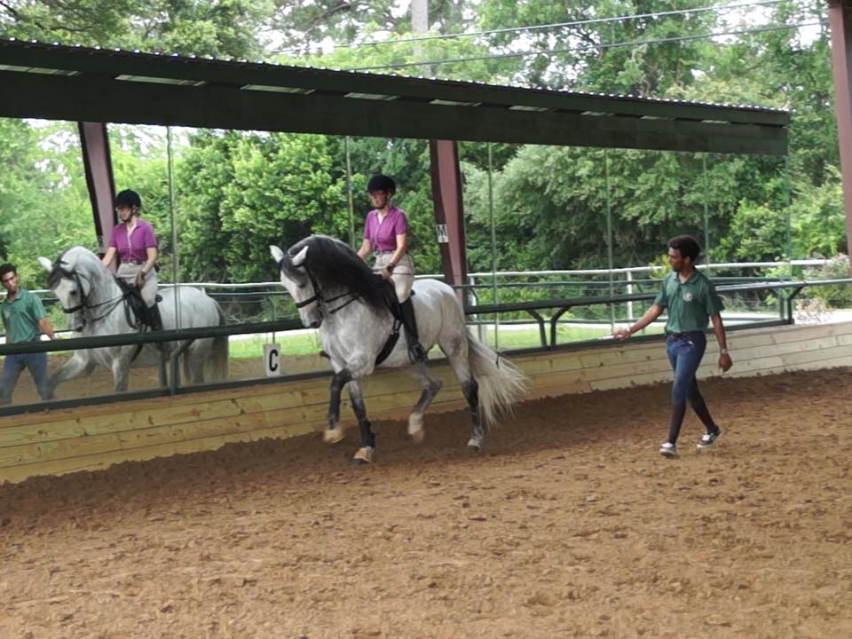
This horse loved passage. Any time I gave the hint that I was going to
ask for something he'd ask if it was going to be passage. I know it's a
disobedience if it's not what I want, but it was so cool to ride.
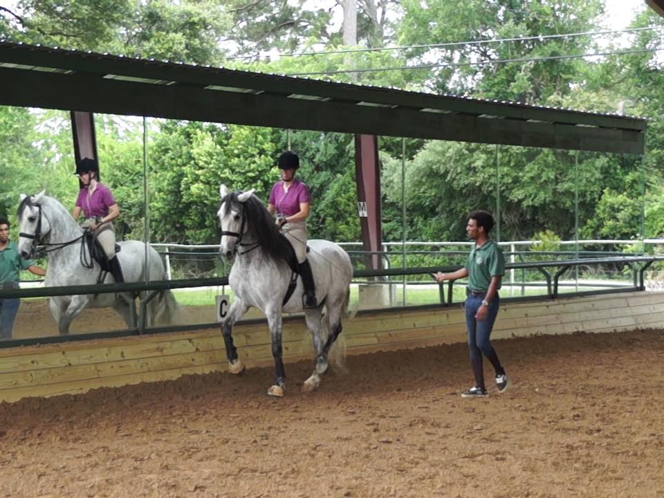
And I've now ridden a piaffe. He wasn't always energetic with it, but
there were a few times when he was calmly skipping away with his back
feet.
So kind and tolerant.